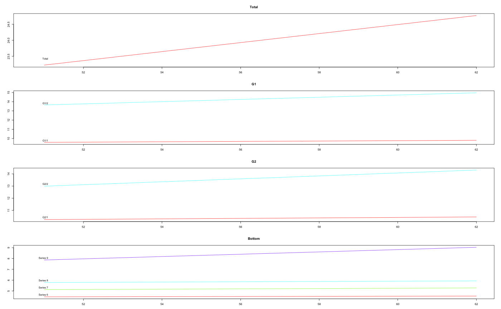
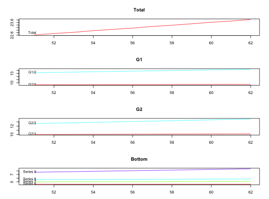

Using the method of Wickramasuriya et al. (2015), this function combines the
forecasts at all levels of a hierarchical or grouped time series. The
forecast.gts calls this function when the MinT method
is selected.
MinT(fcasts, nodes, groups, residual, covariance = c("shr", "sam"), algorithms = c("lu", "cg", "chol"), keep = c("gts", "all", "bottom"))
| fcasts | Matrix of forecasts for all levels of a hierarchical or grouped time series. Each row represents one forecast horizon and each column represents one time series of aggregated or disaggregated forecasts. |
|---|---|
| nodes | If the object class is hts, a list contains the number of child nodes referring to hts. |
| groups | If the object is gts, a gmatrix is required, which is the same as groups in the function gts. |
| residual | Matrix of insample residuals for all the aggregated and
disaggregated time series. The columns must be in the same order as
|
| covariance | Type of the covariance matrix to be used. Shrinking towards a diagonal unequal variances ("shr") or sample covariance matrix ("sam"). |
| algorithms | Algorithm used to compute inverse of the matrices. |
| keep | Return a gts object or the reconciled forecasts at the bottom level. |
Return the reconciled gts object or forecasts at the bottom
level.
Wickramasuriya, S. L., Athanasopoulos, G., & Hyndman, R. J. (2015). Forecasting hierarchical and grouped time series through trace minimization. Working paper 15/15, Department of Econometrics & Business Statistics, Monash University. http://robjhyndman.com/working-papers/mint/
Hyndman, R. J., Lee, A., & Wang, E. (2015). Fast computation of reconciled forecasts for hierarchical and grouped time series. Computational Statistics and Data Analysis, 97, 16--32. http://robjhyndman.com/papers/hgts/
hts, gts,
forecast.gts, combinef
# hts example h <- 12 ally <- aggts(htseg1) n <- nrow(ally) p <- ncol(ally) allf <- matrix(NA, nrow = h, ncol = p) res <- matrix(NA, nrow = n, ncol = p) for(i in 1:p) { fit <- auto.arima(ally[, i]) allf[, i] <- forecast(fit, h = h)$mean res[, i] <- na.omit(ally[, i] - fitted(fit)) } allf <- ts(allf, start = 51) y.f <- MinT(allf, get_nodes(htseg1), residual = res, covariance = "shr", keep = "gts", algorithms = "lu") plot(y.f)y.f_cg <- MinT(allf, get_nodes(htseg1), residual = res, covariance = "shr", keep = "all", algorithms = "cg") # gts example abc <- ts(5 + matrix(sort(rnorm(200)), ncol = 4, nrow = 50)) g <- rbind(c(1,1,2,2), c(1,2,1,2)) y <- gts(abc, groups = g)#>h <- 12 ally <- aggts(y) n <- nrow(ally) p <- ncol(ally) allf <- matrix(NA,nrow = h,ncol = ncol(ally)) res <- matrix(NA, nrow = n, ncol = p) for(i in 1:p) { fit <- auto.arima(ally[, i]) allf[, i] <- forecast(fit, h = h)$mean res[, i] <- na.omit(ally[, i] - fitted(fit)) } allf <- ts(allf, start = 51) y.f <- MinT(allf, groups = get_groups(y), residual = res, covariance = "shr", keep = "gts", algorithms = "lu") plot(y.f)